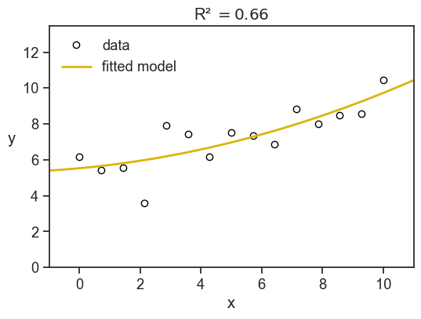
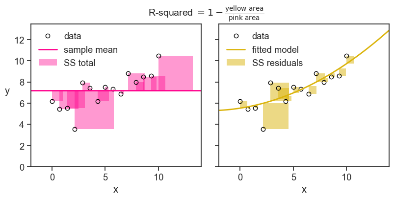
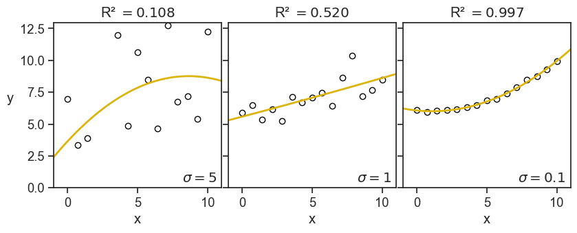
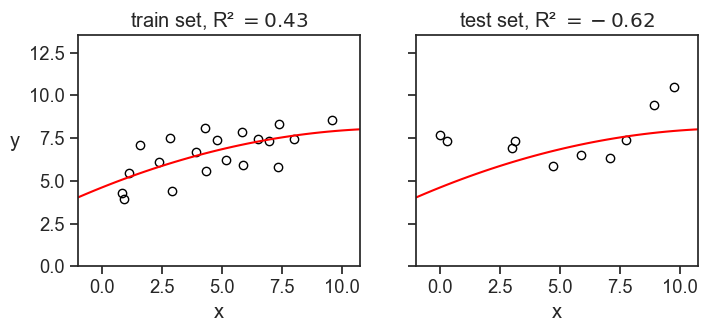
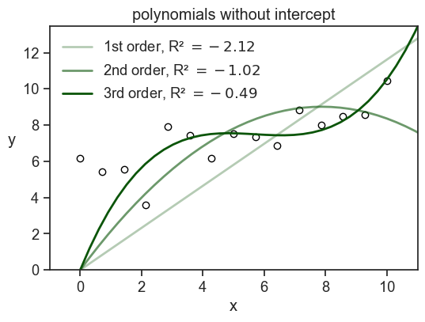
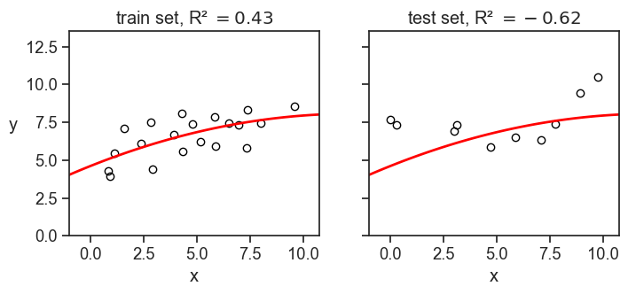

16 R-squared
R-squared is one possible measure used to describe of how well a model fits the data. It is defined as the proportion of the variance in the dependent variable that is predictable from the independent variables. In the chapter partitioning of the sum of squares we saw the following equations:
\begin{align*} SS_\text{Total} &= SS_\text{Model} + SS_\text{Error} \\ \underbrace{\sum_{i=1}^{n} (y_i - \bar{y})^2}_{SS_\text{Total}} &= \underbrace{\sum_{i=1}^{n} (\hat{y}_i - \bar{y})^2}_{SS_\text{Model}} + \underbrace{\sum_{i=1}^{n} (y_i - \hat{y}_i)^2}_{SS_\text{Error}}, \end{align*}
where:
- y_i are the observed values,
- \hat{y}_i are the predicted values from the regression model,
- \bar{y} is the mean of the observed values,
- n is the number of observations.
The R^2 is defined as
R^2 = \frac{SS_\text{Model}}{SS_\text{Total}} = 1 - \frac{SS_\text{Error}}{SS_\text{Total}}.
When talking about R^2, we usually say that it is the proportion of the variance in the observed values that is explained by the model. For example, if R^2 = 0.8, we say that the model explains 80% of the variance in the observed values. We will justify this statement in a moment.
The R^2 value usually (but not always, see below) ranges from 0 to 1. It is zero when the model is simply a horizontal line at the mean of the observed values, because SS_\text{Model} can only be zero if \hat{y}_i = \bar{y} for all i, which happens when the model is just a horizontal line at \bar{y}. The R^2 value is one when the model perfectly fits the data, because SS_\text{Error} can only be zero if \hat{y}_i = y_i for all i, which happens when the model passes exactly on top of every data point.
In short, the higher the R^2 value, the better the model fits the data. [That’s not the whole story, you might be interested in reading about overfitting.]
Now the connection between R^2 and the variance.
If we divide both the SS_\text{Error} and SS_\text{Total} by n-1, we get the sample variances of the errors (residuals) and the dependent variable, respectively.
\begin{align*} s^2_\text{Error} = \frac{SS_\text{Error}}{n-1} &= \frac{\sum_{i=1}^n (y_i - \hat{y}_i)^2}{n-1} \\ s^2_\text{Total} = \frac{SS_\text{Total}}{n-1} &= \frac{\sum_{i=1}^n (y_i - \bar{y})^2}{n-1} \end{align*}
Then the R^2 can then be expressed as: R^2 = \frac{s^2_\text{Model}}{s^2_\text{Total}} = 1 - \frac{s^2_\text{Error}}{s^2_\text{Total}}.
I prefer this equation over the first, because it makes it clear that R^2 is the ratio of the variances, which is a more intuitive way to think about it.
Let’s see an example. We see below (x, y) data points as blue circles, and the solid line is the best-fit for a parabola:
y = \beta_0 + \beta_1 x + \beta_2 x^2.
Show the code
fig, ax = plt.subplots(figsize=(6, 4))
ax.plot(x, y, "o", mfc="None", mec="black", label="data")
x_line = np.linspace(x.min() - 10, x.max() + 10, 100)
ax.plot(x_line, f_predicted(x_line), lw=2, color=gold, label="fitted model")
SS_residuals = np.sum((y - y_hat) ** 2)
SS_total = np.sum((y - y.mean()) ** 2)
R_squared = 1 - SS_residuals / SS_total
ax.set(xlabel="x",
xlim=(x.min() - 1, x.max() + 1),
ylim=(0, y.max() + 3),
title=fr"R² $= {R_squared:.2f}$")
ax.legend(loc="upper left", frameon=False);
ax.set_ylabel("y", rotation=0, labelpad=10);
Here we have R^2=0.66, meaning that the model explains 66% of the variance in the observed values. The remaining 34% of the variance is due to other factors not captured by the model.
The sum of squares have a nice visual interpretation. In the figure below we show SS_\text{Total} (the total sum of squares) litterally as the area of a bunch of pink squares. Each square’s side has length |y_i - \bar{y}|. If we divide the total pink area by the number of observations minus one, we get the sample variance of the observed values.
The yellow squares represent SS_\text{Error} (the sum of squares not explained by the model), where the length of each square’s side is |y_i - \hat{y}_i|. If we divide the total yellow area by the number of observations minus one, we get the sample variance of the errors (residuals).
Finally, the R^2 is simply one minus the ratio of the yellow area to the pink area.
Show the code
fig, ax = plt.subplots(1, 2, figsize=(8, 4), sharey=True, sharex=True, subplot_kw={'aspect':'equal'})
fig.subplots_adjust(left=0.04, right=0.98, top=0.88, bottom=0.15,
hspace=0.05, wspace=0.04)
ax[0].plot(x, y, "o", mfc="None", mec="black", label="data")
ax[1].plot(x, y, "o", mfc="None", mec="black", label="data")
ax[0].axhline(y=y.mean(), color=pink, label="sample mean", lw=2)
ax[1].plot(x_line, f_predicted(x_line), lw=2, color=gold, label="fitted model")
for ind in np.arange(len(x)):
x0 = x[ind]
y0 = y[ind]
# print(x0,y0)
v1 = y_hat[ind] - y0
v2 = y.mean() - y0
# add_rec(ax[1], (x0, y0), -v1, "blue")
# add_rec(ax[0], (x0, y0), -v2, "red")
ax[0].fill_between(x=[x0, x0 + np.abs(v2)],
y1=y0, y2=y0 + v2,
alpha=0.4, color=pink,
label="SS total" if ind == 0 else None,
linewidth=0)
ax[1].fill_between(x=[x0, x0 + np.abs(v1)],
y1=y0, y2=y0 + v1,
alpha=0.5, color=gold,
label="SS residuals" if ind == 0 else None,
linewidth=0)
fig.suptitle(r"R-squared $= 1 - \frac{\text{yellow area}}{\text{pink area}}$", fontsize=14, y=0.98)
ax[0].set(xlabel="x",
xlim=(x.min() - 2, x.max() + 4),
ylim=(0, y.max() + 3),)
ax[1].set(xlabel="x",
xlim=(x.min() - 2, x.max() + 4),
ylim=(0, y.max() + 3),)
ax[0].legend(loc="upper left", frameon=False);
ax[1].legend(loc="upper left", frameon=False);
ax[0].set_ylabel("y", rotation=0, labelpad=10);
Just to build some further intuition, see what happens to the value of R^2 when we decrease the noise in the data.
Show the code
rng = np.random.default_rng(seed=2)
nsample = 15
x = np.linspace(0, 10, nsample)
noise1 = rng.normal(scale=5, size=nsample)
noise2 = rng.normal(scale=1, size=nsample)
noise3 = rng.normal(scale=0.1, size=nsample)
foo = lambda x: 6 - 0.1*x + 0.05*x**2
y1 = foo(x) + noise1
y2 = foo(x) + noise2
y3 = foo(x) + noise3
X = sm.add_constant(np.column_stack((x, x**2)))
model1 = sm.OLS(y1, X).fit()
model2 = sm.OLS(y2, X).fit()
model3 = sm.OLS(y3, X).fit()
y1_hat = model1.predict(X)
y2_hat = model2.predict(X)
y3_hat = model3.predict(X)
f1_predicted = np.poly1d(model1.params[::-1])
f2_predicted = np.poly1d(model2.params[::-1])
f3_predicted = np.poly1d(model3.params[::-1])
R_squared1 = 1 - np.sum((y1 - y1_hat) ** 2) / np.sum((y1 - y1.mean()) ** 2)
R_squared2 = 1 - np.sum((y2 - y2_hat) ** 2) / np.sum((y2 - y2.mean()) ** 2)
R_squared3 = 1 - np.sum((y3 - y3_hat) ** 2) / np.sum((y3 - y3.mean()) ** 2)Show the code
fig, ax = plt.subplots(1, 3, figsize=(8, 3), sharey=True, sharex=True)
fig.subplots_adjust(left=0.04, right=0.98, top=0.95, bottom=0.15,
hspace=0.05, wspace=0.04)
ax[0].plot(x, y1, "o", mfc="None", mec="black", label="data")
ax[1].plot(x, y2, "o", mfc="None", mec="black", label="data")
ax[2].plot(x, y3, "o", mfc="None", mec="black", label="data")
ax[0].plot(x_line, f1_predicted(x_line), lw=2, color=gold, label="fitted model")
ax[1].plot(x_line, f2_predicted(x_line), lw=2, color=gold, label="fitted model")
ax[2].plot(x_line, f3_predicted(x_line), lw=2, color=gold, label="fitted model")
ax[0].text(0.97, 0.02, r"$\sigma=5$", transform=ax[0].transAxes,
horizontalalignment='right', verticalalignment='bottom',
fontweight="bold")
ax[1].text(0.97, 0.02, r"$\sigma=1$", transform=ax[1].transAxes,
horizontalalignment='right', verticalalignment='bottom',
fontweight="bold")
ax[2].text(0.97, 0.02, r"$\sigma=0.1$", transform=ax[2].transAxes,
horizontalalignment='right', verticalalignment='bottom',
fontweight="bold")
ax[0].set(xlabel="x",
xlim=(x.min() - 1, x.max() + 1),
ylim=(0, y1.max() + 3),
title=fr"R² $= {R_squared1:.3f}$")
ax[1].set(xlabel="x",
xlim=(x.min() - 1, x.max() + 1),
ylim=(0, y2.max() + 3),
title=fr"R² $= {R_squared2:.3f}$")
ax[2].set(xlabel="x",
xlim=(x.min() - 1, x.max() + 1),
ylim=(0, y3.max() + 3),
title=fr"R² $= {R_squared3:.3f}$")
ax[0].set_ylabel("y", rotation=0, labelpad=10);
This is the image I have in my head: the R-squared quantifies how tightly the data points are clustered around the fitted curve. This is the exact opposite of what it is in reality, first there are the data points, then we fit a curve to them. Maybe the fitted curve has managed to capture valuable information of the underlying process that generated the data. It’s not that the data points are clustered around the fitted curve, but rather they are clustered around the true underlying curve, and a successful fitted curve is a good shaddow if this true curve.
But, let’s see now another example, what happens when I keep the noise fixed, but I increase the order of the fitted polynomial:
Show the code
x_line = np.linspace(x.min() - 10, x.max() + 10, 1000)
coeff2 = np.polyfit(x, y2, deg=2)
coeff7 = np.polyfit(x, y2, deg=7)
coeff14 = np.polyfit(x, y2, deg=14)
f2_predicted = np.poly1d(coeff2)
f7_predicted = np.poly1d(coeff7)
f14_predicted = np.poly1d(coeff14)
y2_hat = np.polyval(coeff2, x)
y7_hat = np.polyval(coeff7, x)
y14_hat = np.polyval(coeff14, x)
R_squared2 = 1 - np.sum((y2 - y2_hat) ** 2) / np.sum((y2 - y2.mean()) ** 2)
R_squared7 = 1 - np.sum((y2 - y7_hat) ** 2) / np.sum((y2 - y2.mean()) ** 2)
R_squared14 = 1 - np.sum((y2 - y14_hat) ** 2) / np.sum((y2 - y2.mean()) ** 2)Show the code
fig, ax = plt.subplots(1, 3, figsize=(8, 3), sharey=True, sharex=True)
fig.subplots_adjust(left=0.04, right=0.98, top=0.95, bottom=0.15,
hspace=0.05, wspace=0.04)
ax[0].plot(x, y2, "o", mfc="None", mec="black", label="data")
ax[1].plot(x, y2, "o", mfc="None", mec="black", label="data")
ax[2].plot(x, y2, "o", mfc="None", mec="black", label="data")
ax[0].plot(x_line, f2_predicted(x_line), lw=2, color=gold, label="fitted model")
ax[1].plot(x_line, f7_predicted(x_line), lw=2, color=gold, label="fitted model")
ax[2].plot(x_line, f14_predicted(x_line), lw=2, color=gold, label="fitted model")
ax[0].text(0.97, 0.02, r"order=2", transform=ax[0].transAxes,
horizontalalignment='right', verticalalignment='bottom',
fontweight="bold")
ax[1].text(0.97, 0.02, r"order=7", transform=ax[1].transAxes,
horizontalalignment='right', verticalalignment='bottom',
fontweight="bold")
ax[2].text(0.97, 0.02, r"order=14", transform=ax[2].transAxes,
horizontalalignment='right', verticalalignment='bottom',
fontweight="bold")
ax[0].set(xlabel="x",
xlim=(x.min() - 1, x.max() + 1),
ylim=(0, y2.max() + 3),
title=fr"R² $= {R_squared2:.3f}$")
ax[1].set(xlabel="x",
xlim=(x.min() - 1, x.max() + 1),
ylim=(0, y2.max() + 3),
title=fr"R² $= {R_squared7:.3f}$")
ax[2].set(xlabel="x",
xlim=(x.min() - 1, x.max() + 1),
ylim=(0, y2.max() + 3),
title=fr"R² $= {R_squared14:.3f}$")
ax[0].set_ylabel("y", rotation=0, labelpad=10);
This time I don’t have such good feelings as I see the value of R-squared increasing. For the panel on the right, it doesn’t look anymore like to points are hugging the fitted curve, but rather the fitted curve is contorting itself to hug the points.
Of course, I’m foreshadowing a much larger discussion about overfitting and model selection, but I thought it was important to show these graphs now, and warn ourselves about the pitfalls of blindly confounding high R-squared values with good model performance.
16.1 negative R-squared?
Yes. Sometimes it can be negative. Let’s see the formula:
R^2 = 1 - \frac{SS_\text{Error}}{SS_\text{Total}} = 1 - \frac{\sum_{i=1}^n (y_i - \hat{y}_i)^2}{\sum_{i=1}^n (y_i - \bar{y})^2}
R-squared can be negative when the numerator (the sum of squared residuals) is greater than the denominator (the total sum of squares). Another way of saying this is: the model does a worse job of fitting the data than the mean of the observed data. I can imagine two scenarios where this can happen.
16.1.1 the model doesn’t have an intercept
Let’s start with an absurd model:
y = \beta_0
This is to say, the model is just a horizontal line. In order to find the best fit, we need to find the optimal \beta_0. We can do that by minimizing the sum of squared residuals, SS_\text{Error}, with respect to \beta_0.
\frac{\partial }{\partial \beta_0} SS_\text{Error} = \frac{\partial}{\partial \beta_0} \sum_{i=1}^n (y_i - \beta_0)^2 = 0
then…
-2\sum_{i=1}^n (y_i - \beta_0) = 0 \longrightarrow \beta_0 = \frac{1}{n} \sum_{i=1}^n y_i = \bar{y}
We found that the absurd model y = \beta_0 is optimized when \beta_0 is the mean of the observed data, \bar{y}. So let’s call the absurd model now the “mean model”.
We use the sum of squares of this mean model as a benchmark. Of course, this is what we called SS_\text{Total}, the total sum of squares. When we say that a given model has R-squared greater than zero, we are saying that the model does a better job of fitting the data than the mean model. If R-squared is zero, it does equally well. If R-squared is negative, it does worse.
When we modeled the data as a parabola, we used the formula
y = \beta_0 + \beta_1 x + \beta_2 x^2.
This model has to be better than the mean model, because the mean model is a special case of the parabola, where \beta_1 = \beta_2 = 0. Whatever nonzero values are assigned to \beta_1 and \beta_2 during the optimization procees, the SS_\text{Error} becomes necessarily smaller than SS_\text{Total}.
This is true not only for the parabola, but for any model that includes an intercept. So, if we fit a model that has an intercept term, we are guaranteed to have R^2 \geq 0. If we fit a model without an intercept, we are not guaranteed to have R^2 \geq 0. See below what happens when we fit a three different polynomials without an intercept to the data.
Show the code
# use sm to create matrix design for a parabola
X1 = np.column_stack((x,))
X2 = np.column_stack((x, x**2))
X3 = np.column_stack((x, x**2, x**3))
model1 = sm.OLS(y, X1).fit()
model2 = sm.OLS(y, X2).fit()
model3 = sm.OLS(y, X3).fit()
y_hat1 = model1.predict(X1)
y_hat2 = model2.predict(X2)
y_hat3 = model3.predict(X3)
p1 = np.append(0, model1.params)
p2 = np.append(0, model2.params)
p3 = np.append(0, model3.params)
f_predicted1 = np.poly1d(p1[::-1])
f_predicted2 = np.poly1d(p2[::-1])
f_predicted3 = np.poly1d(p3[::-1])Show the code
SS_total = np.sum((y - y.mean())**2)
SS_residuals1 = np.sum((y - y_hat1)**2)
SS_residuals2 = np.sum((y - y_hat2)**2)
SS_residuals3 = np.sum((y - y_hat3)**2)
R_squared1 = 1 - SS_residuals1 / SS_total
R_squared2 = 1 - SS_residuals2 / SS_total
R_squared3 = 1 - SS_residuals3 / SS_total
fig, ax = plt.subplots(figsize=(6, 4))
ax.plot(x, y, "o", mfc="None", mec="black")
x_line = np.linspace(x.min() - 10, x.max() + 10, 100)
ax.plot(x_line, f_predicted1(x_line), color=green, lw=2, label=fr"1st order, R² $= {R_squared1:.2f}$", alpha=0.3)
ax.plot(x_line, f_predicted2(x_line), color=green, lw=2, label=fr"2nd order, R² $= {R_squared2:.2f}$", alpha=0.6)
ax.plot(x_line, f_predicted3(x_line), color=green, lw=2, label=fr"3rd order, R² $= {R_squared3:.2f}$")
ax.set(xlabel="x",
xlim=(x.min() - 1, x.max() + 1),
ylim=(0, y.max() + 3),
title=fr"polynomials without intercept")
ax.legend(loc="upper left", frameon=False);
ax.set_ylabel("y", rotation=0, labelpad=10);
Note that if I had used np.polyfit to fit the data, I would have gotten a model with an intercept. In order to get a model without an intercept, I had to design myself the design matrix and use statmodels.OLS.
There’s another option for how to get negative R-squared.
16.1.2 the model is fitted to a different dataset
This is quite common when we train a model on a training set, and then evaluate it on a test set. If the model is overfitted to the training data, it may perform very poorly on the test data, resulting in a negative R-squared value when evaluated on the test set. It also may be that we have a small test set, and by chance the model performs very poorly on it, even if it is not overfitted. In any case, a negative R-squared value in this context indicates that the model is not generalizing well to new data. See an example below.
Show the code
for seed in np.arange(10):
rng = np.random.default_rng(seed=seed)
N = 30
x_sample = rng.uniform(0, 10, N)
noise = rng.normal(scale=1, size=N)
y_sample = foo(x_sample) + rng.normal(scale=1, size=N)
idx = int(0.67 * N)
x_train = x_sample[:idx]
y_train = y_sample[:idx]
x_test = x_sample[idx:]
y_test = y_sample[idx:]
coefficients = np.polyfit(x_train, y_train, deg=2)
fitted_model = np.poly1d(coefficients)
y_predicted_train = fitted_model(x_train)
y_predicted_test = fitted_model(x_test)
SS_total_train = np.sum((y_train - y_train.mean())**2)
SS_total_test = np.sum((y_test - y_test.mean())**2)
SS_residuals_train = np.sum((y_train - y_predicted_train)**2)
SS_residuals_test = np.sum((y_test - y_predicted_test)**2)
R_squared_train = 1 - SS_residuals_train / SS_total_train
R_squared_test = 1 - SS_residuals_test / SS_total_test
print(f"seed: {seed}, R² train: {R_squared_train:.2f}, R² test: {R_squared_test:.2f}")seed: 0, R² train: 0.54, R² test: 0.53
seed: 1, R² train: 0.73, R² test: 0.73
seed: 2, R² train: 0.61, R² test: 0.58
seed: 3, R² train: 0.43, R² test: -0.62
seed: 4, R² train: 0.69, R² test: 0.54
seed: 5, R² train: 0.75, R² test: 0.79
seed: 6, R² train: 0.69, R² test: 0.63
seed: 7, R² train: 0.75, R² test: 0.69
seed: 8, R² train: 0.53, R² test: 0.64
seed: 9, R² train: 0.65, R² test: 0.62Show the code
rng = np.random.default_rng(seed=3)
N = 30
x_sample = rng.uniform(0, 10, N)
noise = rng.normal(scale=1, size=N)
y_sample = foo(x_sample) + rng.normal(scale=1, size=N)
idx = int(0.67 * N)
x_train = x_sample[:idx]
y_train = y_sample[:idx]
x_test = x_sample[idx:]
y_test = y_sample[idx:]
coefficients = np.polyfit(x_train, y_train, deg=2)
fitted_model = np.poly1d(coefficients)
y_predicted_train = fitted_model(x_train)
y_predicted_test = fitted_model(x_test)
SS_total_train = np.sum((y_train - y_train.mean())**2)
SS_total_test = np.sum((y_test - y_test.mean())**2)
SS_residuals_train = np.sum((y_train - y_predicted_train)**2)
SS_residuals_test = np.sum((y_test - y_predicted_test)**2)
R_squared_train = 1 - SS_residuals_train / SS_total_train
R_squared_test = 1 - SS_residuals_test / SS_total_test
fig, ax = plt.subplots(1, 2, figsize=(8, 3), sharey=True, sharex=True)
ax[0].plot(x_train, y_train, "o", mfc="None", mec="black")
ax[0].plot(x_line, fitted_model(x_line),lw=2, color="red")
ax[1].plot(x_test, y_test, "o", mfc="None", mec="black")
ax[1].plot(x_line, fitted_model(x_line), lw=2, color="red")
ax[0].set(xlabel="x",
xlim=(x_sample.min() - 1, x_sample.max() + 1),
ylim=(0, y_sample.max() + 3),
title=fr"train set, R² $= {R_squared_train:.2f}$")
ax[0].set_ylabel("y", rotation=0, labelpad=10)
ax[1].set(xlabel="x",
xlim=(x_sample.min() - 1, x_sample.max() + 1),
ylim=(0, y_sample.max() + 3),
title=fr"test set, R² $= {R_squared_test:.2f}$");
In the example above, we divided the dataset of 30 points into 20 training points and 10 test points. We fitted a parabola to the training data, and then evaluated the R-squared on both the training and test data. I had to play a little bit with the random seed to get a negative R-squared on the test set, but it is not that hard to get it.